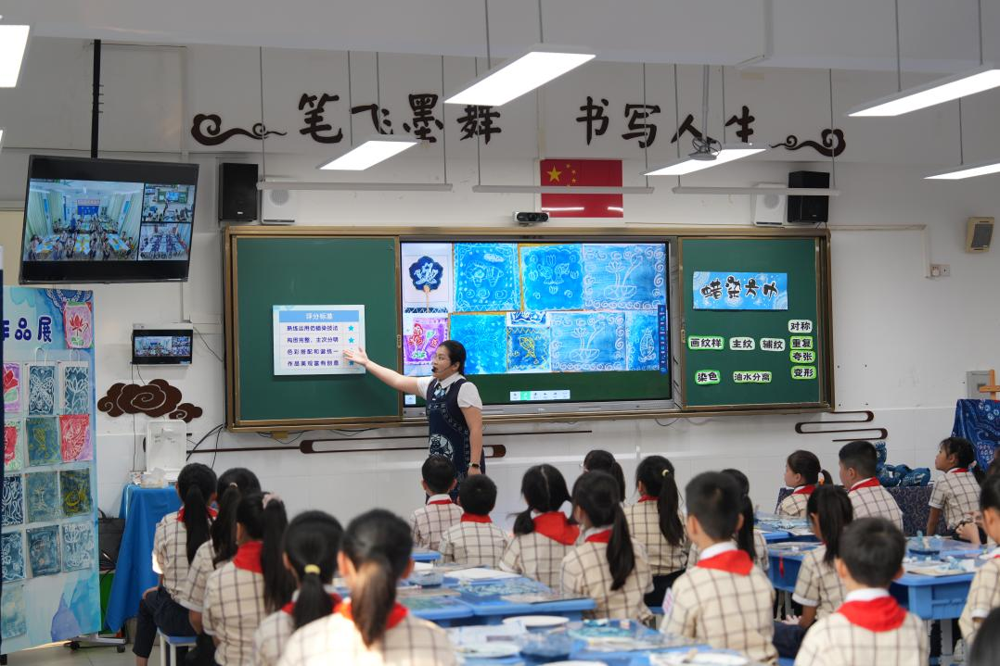
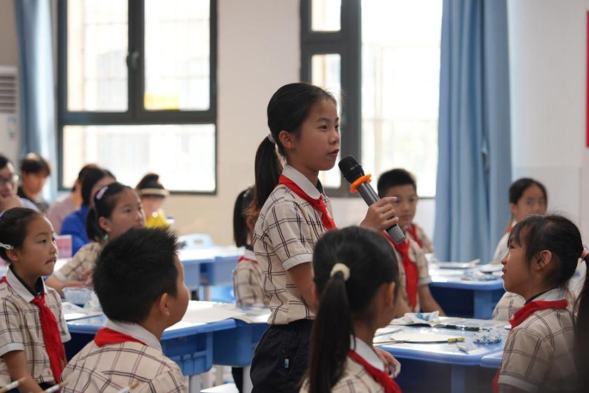
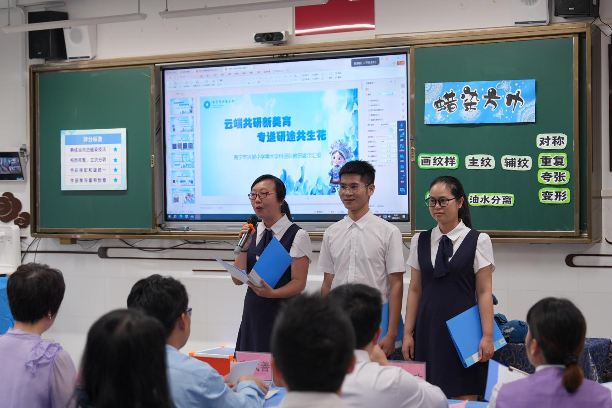
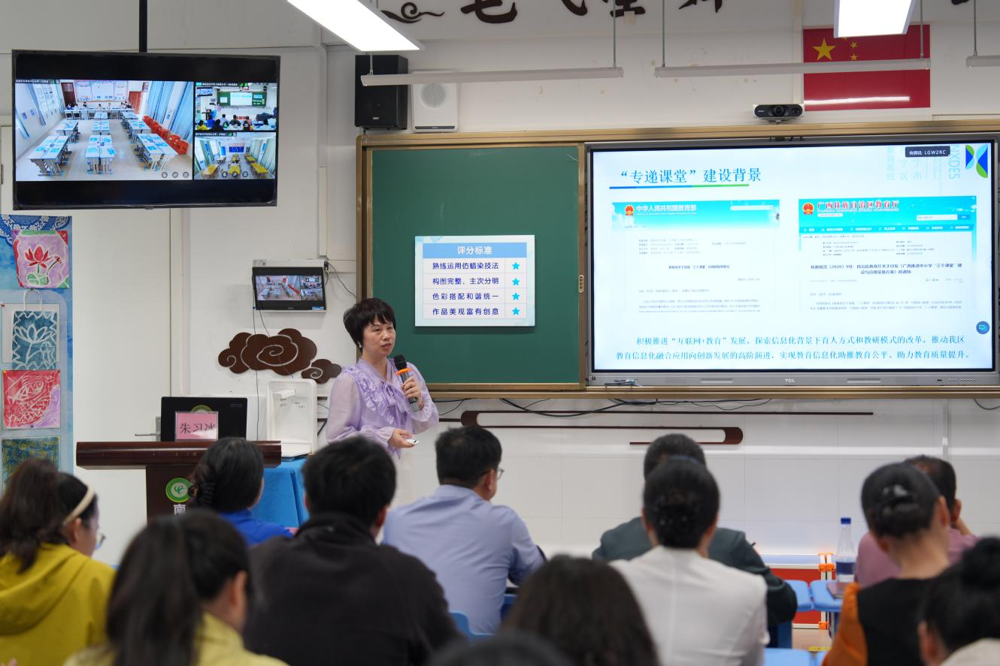
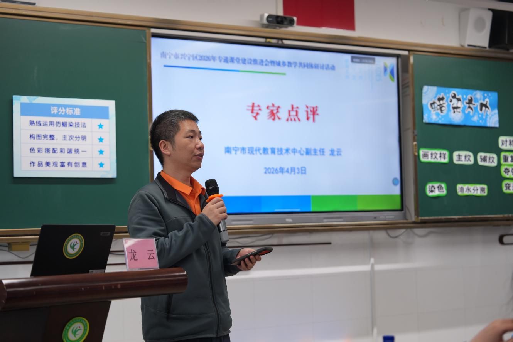
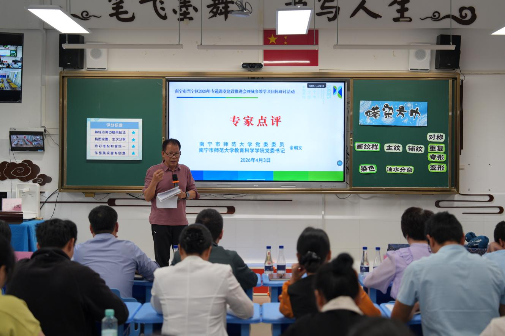
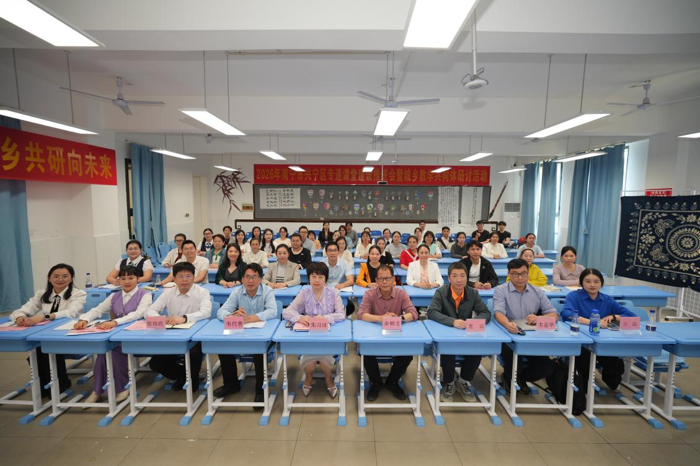

为深入推进专递课堂常态化应用，深化城乡教学共同体建设，2026年4月3日，以"无界融通提质效 城乡共研向未来"为主题的南宁市兴宁区专递课堂建设推进会暨城乡教学共同体研讨活动在玉蟾路小学成功举办。
高校专家、教育科研机构代表、技术企业负责人，以及兴宁区专递课堂主讲端、乡村听讲端学校的领导和骨干教师齐聚现场，线上线下同步联动，共探城乡教育协同发展新路径。这也是兴宁区践行"品学兴宁 品质发展"理念，打造教育优质均衡"兴宁样板"的又一实践举措。
活动伊始，一堂跨越三地的专递课堂精彩开讲。南宁市兴望小学韦锦婷老师以《蜡染方巾》为题，通过玉蟾路小学录播教室作为主讲端，同步连线玉林市北流市石窝镇中心小学、兴宁区三塘镇同仁小学两个听讲端，借助魔法游戏、互动提问、仿制体验等多元教学策略，让三地学生同屏互动、同步学习。


数字化技术成为连接城乡教育的桥梁，让乡村孩子足不出校就能享受和城区孩子同等的优质教学资源，生动诠释了专递课堂"让每个孩子都能享有公平而有质量的教育"的初心。
—— 本次活动现场纪实
作为兴宁区教育数字化转型的核心成果，"三阶六位一体混合式教研模式"在本次活动中迎来全面成果展示。兴望小学教研团队以这节跨区域专递课堂为蓝本，从三个维度完整呈现了模式落地的全流程：

该模式已成为兴宁区推动13所主讲端学校与33所乡村听讲端学校结对共建的核心抓手，依托希沃、科大讯飞等数字化设备，实现美术、音乐、英语等乡村紧缺学科的同步授课全覆盖，为城乡教师协同发展提供了可复制、可推广的实践样本。

活动现场，兴宁区教育局教研室主任朱习冰作专题发言，系统阐述了无界融通城乡教学共同体建构的三大路径：
🏫 打造无边界学习场域
立足城区实际，聚焦现存问题，打破学习空间与形式的局限，让教育资源触手可及，实现优质教育全域覆盖。
🤝 构建城乡教学共同体
搭建双向交流平台，推动城乡教师协同共进、优势互补，让优质教育资源从"单向输送"转向"双向融通"。
🔬 创新教研模式
创建"三阶六位一体"混合式教研模式，不断厚实城乡教师专业素养，真正转化为教学生产力，构建"共建、共研、共享、共生"新生态。
近年来，兴宁区获得各级财政投入1060万元资金用于专递课堂建设，实现农村学校网络全覆盖、千兆带宽到校、百兆带宽到班，为专递课堂常态化开展筑牢硬件基础。

本节课真正实现思维培养落地，有效破解项目式学习中学生"放手不知做什么"的难题。课堂充分体现跨校协同优势，实现传统美术技法、AI技术与数字人应用的深度结合，促进认知发展与核心素养同步提升。
本节课在数字人运用、多班级同步互动、全员参与游戏设计等方面亮点突出，教师能够均衡兼顾多个班级的提问与展示，有效推动城乡优质教育资源共享，展现了专递课堂的深厚潜力与创新价值。
本次活动通过课例展示、团队教研、专题分享、专家点评的全链条呈现，完成了从实践到理论、从技术到教研的深度对话。参会人员深刻感受到，兴宁区的专递课堂正让：
📖 课堂：从封闭走向开放
乡村学生与城区学生同堂共学，优质教育资源跨越地理边界自由流动。
👩🏫 教师：从单兵走向协同
一批"带不走"的乡村骨干教师正在崛起，在协同成长中持续提升专业素养。
🌐 资源：从零散走向整合
真正构建起"无界融通"的城乡教学共同体新生态，实现教育公平的系统性突破。

此次推进会后，兴宁区将以"三阶六位一体混合式教研模式"为核心，进一步扩大专递课堂覆盖范围，深化城乡教学共同体建设，让数字化教育的春风吹遍每一所乡村学校，让教育公平的温度照亮每个孩子的成长之路。